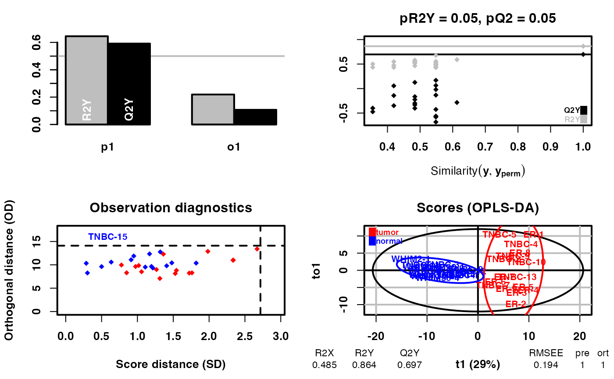
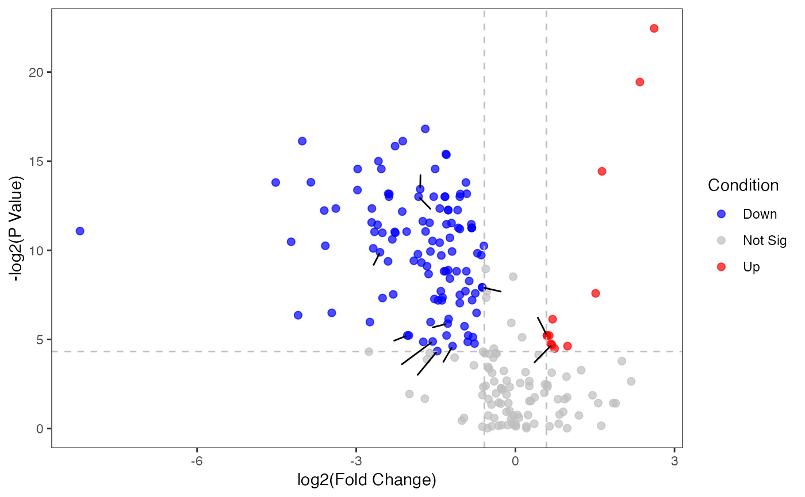

Plot the volcano figure
Examples
diff_result <- DM(2**meta_dat,group)
#> OPLS-DA
#> 31 samples x 219 variables and 1 response
#> standard scaling of predictors and response(s)
#> R2X(cum) R2Y(cum) Q2(cum) RMSEE pre ort pR2Y pQ2
#> Total 0.485 0.864 0.697 0.194 1 1 0.05 0.05

p_volcano <- pVolcano(diff_result,foldchange_threshold=1.5)
#> [1] 1.5
p_volcano
#> Warning: ggrepel: 15 unlabeled data points (too many overlaps). Consider increasing max.overlaps
